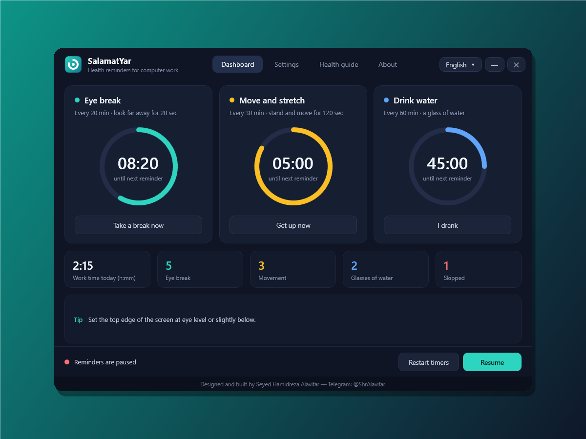
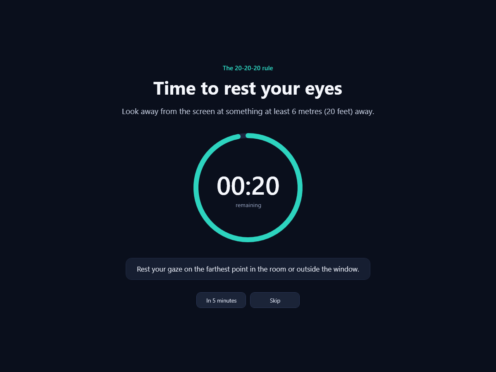
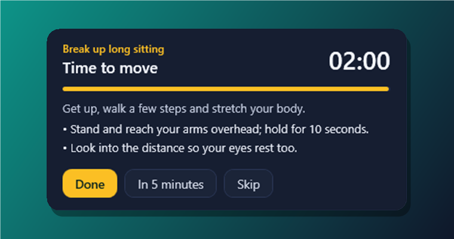
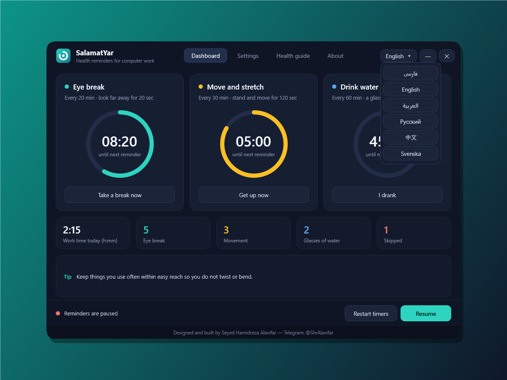
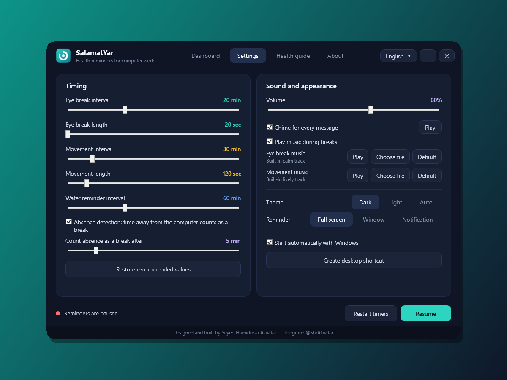
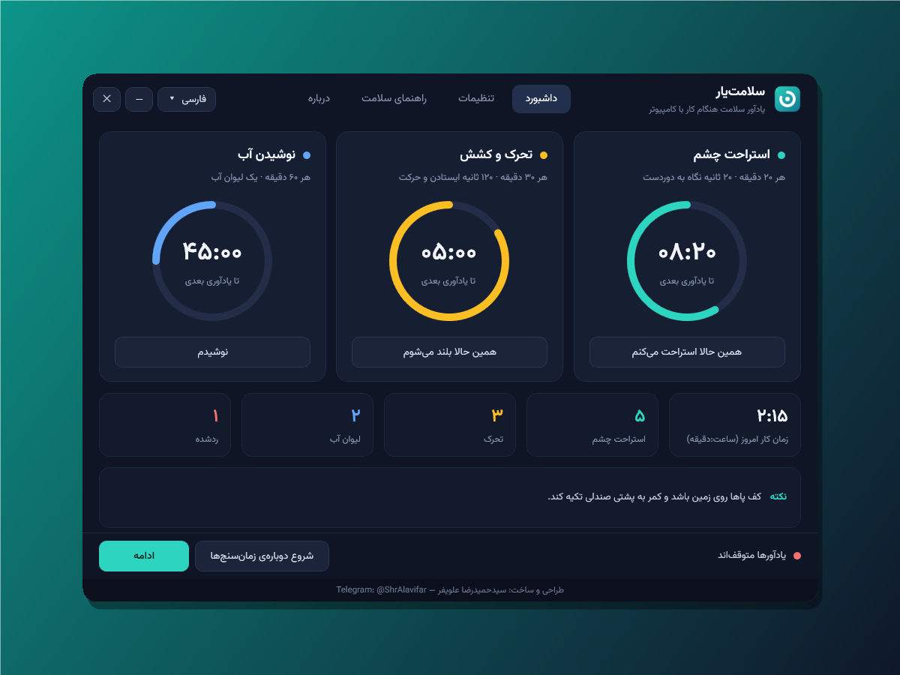

A free, open-source break reminder for people who spend hours at a computer. Eye breaks, movement and water, in six languages, for Windows, macOS and Linux.
Download for Windows Source code on GitHubWindows 10 and 11 · no installation · MIT license · no data leaves your computer
Preview for other systems: macOS · Linux (.deb) · Linux (AppImage)

Every 20 minutes, look about 6 metres away for 20 seconds: the 20-20-20 rule.
Every 30 minutes, stand up and move for 2 minutes, with suggested stretches.
A gentle reminder every hour, with a small hydration tip.
One or two per reminder, with no repeats until you have seen the whole set.
Full screen, a small corner window, or only a notification next to the clock.
The stable edition runs on Windows; a preview of the cross-platform edition also runs on macOS and Linux.
Change every timing, pick your own music, choose dark or light theme.




Download the ZIP, extract the whole folder and double-click SalamatYar.exe. The program is not code-signed, so Windows may show a warning the first time; choose More info, then Run anyway. The full source is on GitHub.
The cross-platform edition (2.0 preview) has the same features. On macOS, open the DMG and drag SalamatYar to Applications; the app is not code-signed, so choose Open Anyway in Privacy & Security the first time. On Linux, install the .deb package or make the AppImage executable and run it. These builds are new and have not yet been tested on real machines; please report anything that does not work.
The default timings follow published guidance from the American Optometric Association, UK HSE, OSHA and WHO. SalamatYar is a reminder tool and does not replace medical advice.
سلامتیار یک یادآور رایگان و متنباز برای کسانی است که ساعتها پشت کامپیوتر مینشینند: استراحت چشم با قانون ۲۰-۲۰-۲۰، تحرک و کشش، و یادآوری نوشیدن آب. شش زبان دارد (فارسی، انگلیسی، عربی، روسی، چینی و سوئدی) و هیچ دادهای از سیستم شما بیرون نمیرود. نسخهی پایدار برای ویندوز است و نسخهی آزمایشی آن روی مک و لینوکس هم اجرا میشود.
